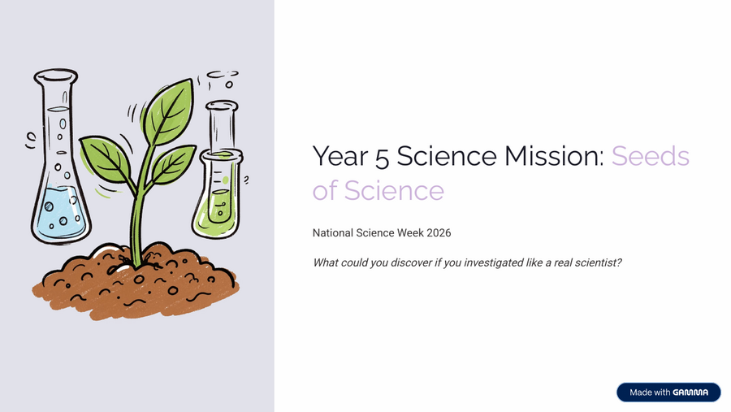

Year 5 · Science · National Science Week 2026 · Free Printable
Year 5 Science Mission: Seeds of Science
What could you discover if you investigated like a real scientist? Explore scientific thinking, life cycles, day & night shadows, heat & temperature, and complete a mini investigation.
Worksheet Preview

Why teachers and families download this one
✅ Instant download, no sign-up. A ready-to-use National Science Week 2026 mission pack with investigation tasks. Perfect for a whole-class science week, a science club activity, or home learning. Teacher answers available separately.
Learning Intention
Students will think like scientists by asking questions, making predictions, planning investigations, collecting evidence and explaining findings related to life cycles, shadows and heat transfer.
Australian Curriculum
Aligned to Year 5 Science Understanding (Biological Sciences, Earth & Space Sciences, Physical Sciences) and Science Inquiry Skills.
Teacher Notes
Ideal for National Science Week 2026. Can be used as a full mission or individual pages. Safety note included for the insulation investigation (teacher handles hot water).
Skills Practised
- Scientific thinking and the investigation process
- Comparing life cycles (butterfly & frog)
- Understanding day, night and changing shadows
- Heat transfer – conductors and insulators
- Designing fair tests and collecting data
- Evidence-based reasoning and conclusions
Why This Mission Works
- Covers multiple Year 5 Science Understanding areas in one coherent mission.
- Builds Science Inquiry Skills through a real investigation structure.
- Flexible — use the whole pack or individual pages for life cycles, shadows or heat.
- Designed specifically for the 2026 National Science Week theme “Seeds of Science”.
Seeds of Science — Frequently Asked Questions
Common questions from teachers, parents and tutors about this Science Mission.
Is this worksheet suitable for National Science Week 2026?
Yes. It is designed as a ready-to-use Science Mission pack for the 2026 theme Seeds of Science, covering scientific thinking, life cycles, shadows and heat transfer.
Do I need to sign up or enter my email to download?
No. The worksheet downloads instantly as a free PDF — no sign-up and no email required.
Are teacher answers included?
Teacher answers are available separately. The main student PDF focuses on the investigation activities.
What year level is this for?
It is written for Year 5 and aligns with Year 5 Science Understanding and Science Inquiry Skills.